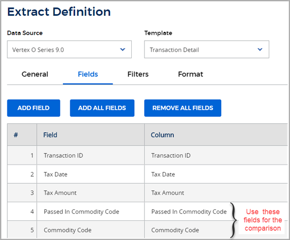

The commodity code that the Calculation Engine uses for tax determination on a line item can differ from the commodity code that is passed to Your Vertex product in the transaction XML request message. How do you know which commodity code O Series applied to the calculation of tax? There's an easy way to find out.
Why there may be a difference
The difference between the commodity code in the request message and that used in calculation can occur when Vertex data does not provide rate and rule data for the specific commodity code that is passed with the transaction. O Series then uses the commodity code from the next highest level of the commodity code tree for which rates and rules are supported.
Where to compare the code requested vs. the code used for tax calculation
You can review the commodity codes that are associated with a transaction by running the Transaction Detail data extract in the Custom Reports - VRA feature. Review the following:
For the commodity code that was passed to O Series in the transaction XML request message, see the Passed In Commodity Code field.
For the commodity code that was used by the Calculation Engine in tax calculations, review the Commodity Code field. You can also see this code in the usedCommodityCode element in the transaction XML response message.
Here is a sample extract definition that looks at both commodity codes:

Related articles
Commodity codes in O Series
Review the taxability of a commodity code
Add custom commodity codes